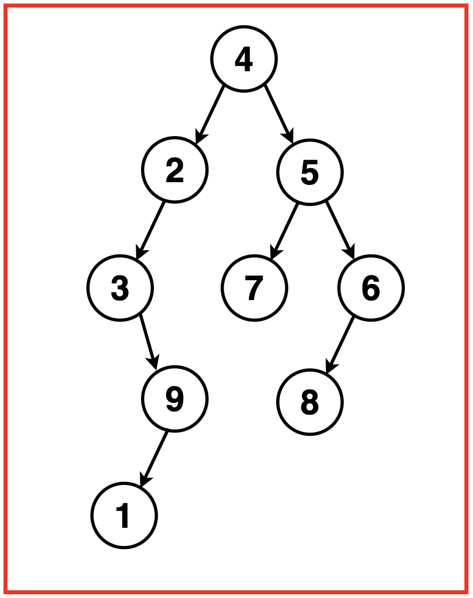
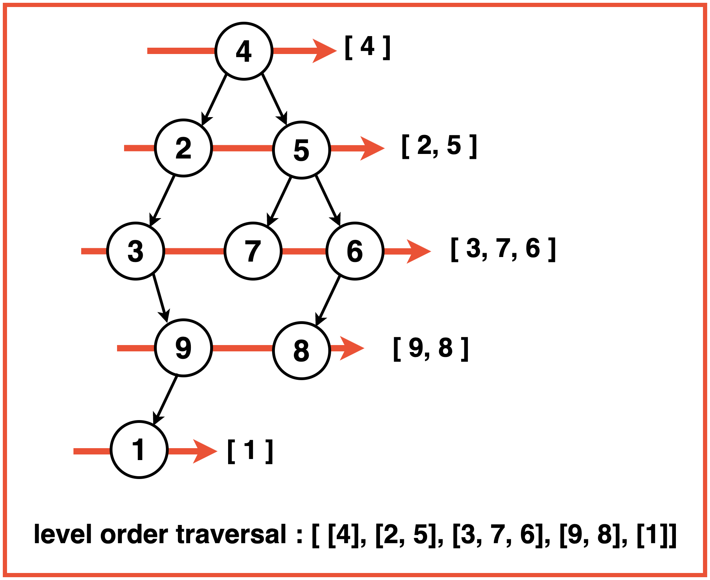
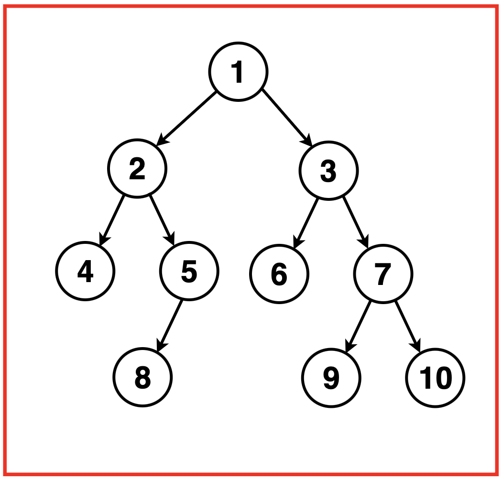
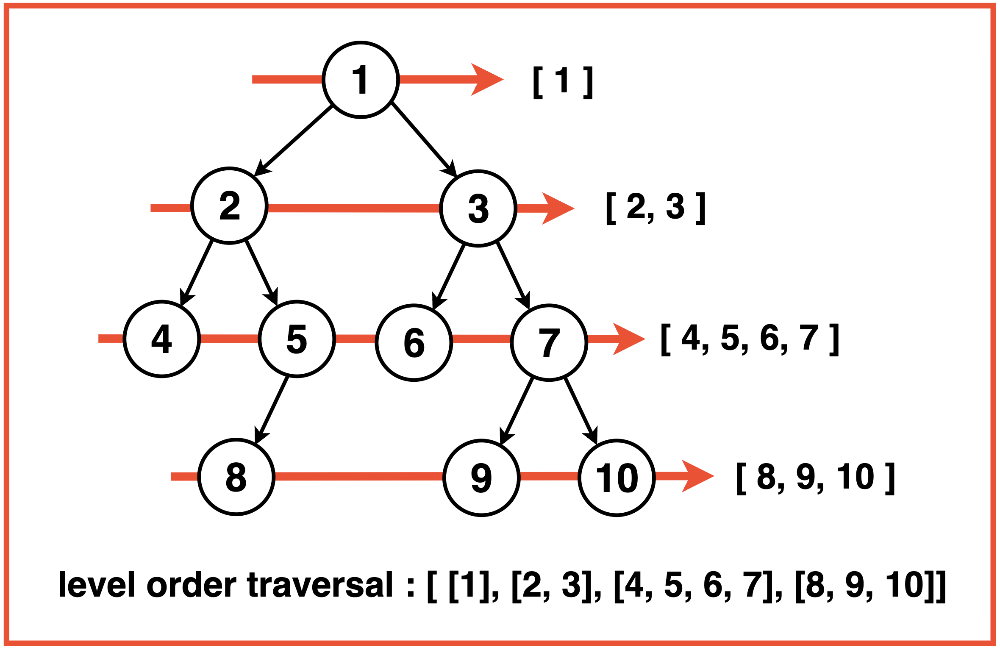
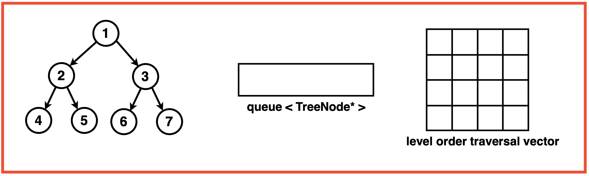
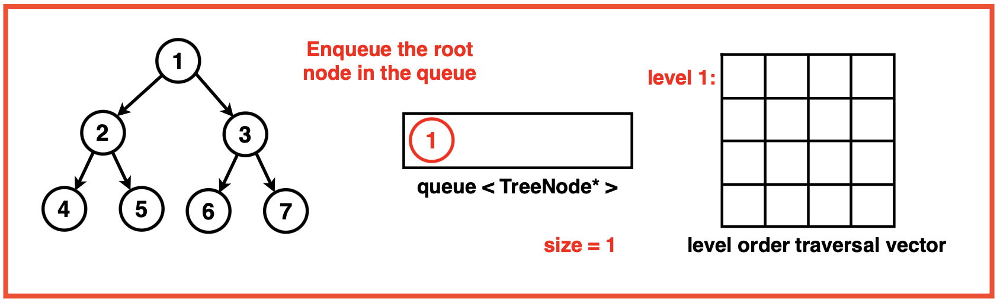
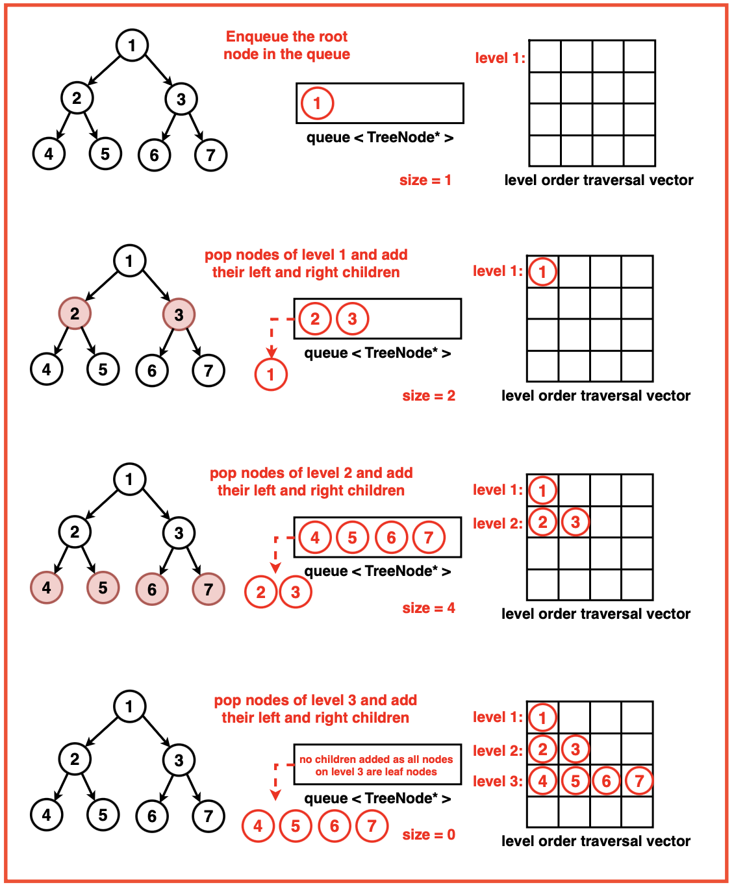

Problem Statement: Given the root of a Binary Tree, returns an array containing the level order traversal of the tree.
Examples
Example 1:Input: Binary Tree: 4 2 5 3 -1 7 6 -1 9 -1 -1 8 -1 1Output:[ [4],[ 2, 5 ],[ 3, 7, 6],[ 9, 8],[ 1 ]] Explanation: We traverse the binary tree level by level using the following traversal:Example 2:Input:Binary Tree: 1 2 3 4 5 6 7 -1 -1 8 -1 -1 -1 9 10
Output : [ [1],[2, 3],[4, 5, 6, 7],[8, 9, 10]]Explanation: We traverse the binary tree in the order of Root, Left then Right recursively resulting in the following traversal:
Disclaimer: Don’t jump directly to the solution, try it out
yourself first.
Optimal Approach
Algorithm / Intuition
To perform a level-order traversal on a binary tree and store the nodes’ values in a 2D vector representing each level, start by initialising an empty queue to hold the level by level nodes.Enqueue the root node into the queue and traverse until the queue is empty. For each level, track the number of nodes in that level, creating a temporary vector to deque and store them. At each node, store its value in the temporary vector and enqueue its left and right children if they exist.Once all the nodes at a level are processed add this 1D temporary vector to the final 2D vector, representing that level. This process repeats until all levels are traversed. Finally, return this 2D vector containing the level order traversal of the binary tree.
Algorithm:
Step 1: nitialise an empty queue data structure to store the nodes during traversal. Create a 2D array or a vector of a vector to store the level order traversal. If the tree is empty, return this empty 2D vector.

Step 2: Enqueue the root node ie. Add the root node of the binary tree to the queue.

Step 3:
Iterate until the queue is empty:
Get the current size of the queue. This size indicates the number of nodes at the current level.
Create a vector ‘level’ to store the nodes at the current level.
Iterate through ‘size’ number of nodes at the current level:
Pop the front node from the queue.
Store the node’s value in the level vector.
Enqueue the left and right child nodes of the current node (if they exist) into the queue.
After processing all the nodes at the current level, add the ‘level’ vector to the ‘ans’ 2D vector, representing the current level.

Step 4: Once the traversal loop completes ie. all levels have been processed, return the ‘ans’ 2D vector containing the level-order traversal.
Code
#include <iostream>
#include <vector>
#include <queue>
using namespace std;
// TreeNode struct represents
// a node in a binary tree
struct TreeNode {
int val;
TreeNode* left;
TreeNode* right;
// Default constructor for TreeNode
TreeNode() : val(0), left(nullptr), right(nullptr) {}
// Constructor with a value
// parameter for TreeNode
TreeNode(int x) : val(x), left(nullptr), right(nullptr) {}
// Constructor with value, left
// child, and right child
// parameters for TreeNode
TreeNode(int x, TreeNode* left, TreeNode* right) : val(x), left(left), right(right) {}
};
class Solution {
public:
// Function to perform level-order
// traversal of a binary tree
vector<vector<int>> levelOrder(TreeNode* root) {
// Create a 2D vector to store levels
vector<vector<int>> ans;
if (root == nullptr) {
// If the tree is empty,
// return an empty vector
return ans;
}
// Create a queue to store nodes
// for level-order traversal
queue<TreeNode*> q;
// Push the root node to the queue
q.push(root);
while (!q.empty()) {
// Get the size of the current level
int size = q.size();
// Create a vector to store
// nodes at the current level
vector<int> level;
for (int i = 0; i < size; i++) {
// Get the front node in the queue
TreeNode* node = q.front();
// Remove the front node from the queue
q.pop();
// Store the node value
// in the current level vector
level.push_back(node->val);
// Enqueue the child nodes if they exist
if (node->left != nullptr) {
q.push(node->left);
}
if (node->right != nullptr) {
q.push(node->right);
}
}
// Store the current level
// in the answer vector
ans.push_back(level);
}
// Return the level-order
// traversal of the tree
return ans;
}
};
// Function to print
// the elements of a vector
void printVector(const vector<int>& vec) {
// Iterate through the
// vector and print each element
for (int num : vec) {
cout << num << " ";
}
cout << endl;
}
// Main function
int main() {
// Creating a sample binary tree
TreeNode* root = new TreeNode(1);
root->left = new TreeNode(2);
root->right = new TreeNode(3);
root->left->left = new TreeNode(4);
root->left->right = new TreeNode(5);
// Create an instance
// of the Solution class
Solution solution;
// Perform level-order traversal
vector<vector<int>> result = solution.levelOrder(root);
cout << "Level Order Traversal of Tree: "<< endl;
// Printing the level order traversal result
for (const vector<int>& level : result) {
printVector(level);
}
return 0;
}
import java.util.*;
// TreeNode class represents
// a node in a binary tree
class TreeNode {
int val;
TreeNode left;
TreeNode right;
// Default constructor for TreeNode
TreeNode() {
this.val = 0;
this.left = null;
this.right = null;
}
// Constructor with a value
// parameter for TreeNode
TreeNode(int x) {
this.val = x;
this.left = null;
this.right = null;
}
// Constructor with value, left
// child, and right child
// parameters for TreeNode
TreeNode(int x, TreeNode left, TreeNode right) {
this.val = x;
this.left = left;
this.right = right;
}
}
class Solution {
// Function to perform level-order
// traversal of a binary tree
public List<List<Integer>> levelOrder(TreeNode root) {
// Create a list of lists to store levels
List<List<Integer>> ans = new ArrayList<>();
if (root == null) {
// If the tree is empty,
// return an empty list
return ans;
}
// Create a queue to store nodes
// for level-order traversal
Queue<TreeNode> q = new LinkedList<>();
// Push the root node to the queue
q.add(root);
while (!q.isEmpty()) {
// Get the size of the current level
int size = q.size();
// Create a list to store
// nodes at the current level
List<Integer> level = new ArrayList<>();
for (int i = 0; i < size; i++) {
// Get the front node in the queue
TreeNode node = q.poll();
// Store the node value
// in the current level list
level.add(node.val);
// Enqueue the child nodes if they exist
if (node.left != null) {
q.add(node.left);
}
if (node.right != null) {
q.add(node.right);
}
}
// Store the current level
// in the answer list
ans.add(level);
}
// Return the level-order
// traversal of the tree
return ans;
}
}
public class Main {
// Function to print
// the elements of a list
static void printList(List<Integer> list) {
// Iterate through the
// list and print each element
for (int num : list) {
System.out.print(num + " ");
}
System.out.println();
}
// Main function
public static void main(String[] args) {
// Creating a sample binary tree
TreeNode root = new TreeNode(1);
root.left = new TreeNode(2);
root.right = new TreeNode(3);
root.left.left = new TreeNode(4);
root.left.right = new TreeNode(5);
// Create an instance
// of the Solution class
Solution solution = new Solution();
// Perform level-order traversal
List<List<Integer>> result = solution.levelOrder(root);
System.out.println("Level Order Traversal of Tree:");
// Printing the level order traversal result
for (List<Integer> level : result) {
printList(level);
}
}
}
from collections import deque
# TreeNode class represents
# a node in a binary tree
class TreeNode:
def __init__(self, val=0, left=None, right=None):
self.val = val
self.left = left
self.right = right
class Solution:
def levelOrder(self, root):
# Create a list to store levels
ans = []
if not root:
# If the tree is empty,
# return an empty list
return ans
# Create a queue to store nodes
# for level-order traversal
q = deque()
# Enqueue the root node
q.append(root)
while q:
# Get the size of the current level
size = len(q)
# Create a list to store
# nodes at the current level
level = []
for i in range(size):
# Get the front node in the queue
node = q.popleft()
# Store the node value
# in the current level list
level.append(node.val)
# Enqueue the child nodes if they exist
if node.left:
q.append(node.left)
if node.right:
q.append(node.right)
# Store the current level
# in the answer list
ans.append(level)
# Return the level-order
# traversal of the tree
return ans
# Function to print
# the elements of a list
def printList(lst):
# Iterate through the
# list and print each element
for num in lst:
print(num, end=" ")
print()
# Main function
if __name__ == "__main__":
# Creating a sample binary tree
root = TreeNode(1)
root.left = TreeNode(2)
root.right = TreeNode(3)
root.left.left = TreeNode(4)
root.left.right = TreeNode(5)
# Create an instance
# of the Solution class
solution = Solution()
# Perform level-order traversal
result = solution.levelOrder(root)
print("Level Order Traversal of Tree:")
# Printing the level order traversal result
for level in result:
printList(level)
// TreeNode class represents
// a node in a binary tree
class TreeNode {
constructor(val = 0, left = null, right = null) {
this.val = val;
this.left = left;
this.right = right;
}
}
class Solution {
// Function to perform level-order
// traversal of a binary tree
levelOrder(root) {
// Create an array to store levels
let ans = [];
if (!root) {
// If the tree is empty,
// return an empty array
return ans;
}
// Create a queue to store
// nodes for level-order traversal
let q = [];
// Push the root node to the queue
q.push(root);
while (q.length > 0) {
// Get the size of the current level
let size = q.length;
// Create an array to store
// nodes at the current level
let level = [];
for (let i = 0; i < size; i++) {
// Get the front node in the queue
let node = q.shift();
// Store the node value
// in the current level array
level.push(node.val);
// Enqueue the child
// nodes if they exist
if (node.left !== null) {
q.push(node.left);
}
if (node.right !== null) {
q.push(node.right);
}
}
// Store the current level
// in the answer array
ans.push(level);
}
// Return the level-order
// traversal of the tree
return ans;
}
}
// Function to print the
// elements of an array
function printArray(arr) {
// Iterate through the
// array and print each element
for (let num of arr) {
console.log(num + " ");
}
console.log("\n");
}
// Creating a sample binary tree
let root = new TreeNode(1);
root.left = new TreeNode(2);
root.right = new TreeNode(3);
root.left.left = new TreeNode(4);
root.left.right = new TreeNode(5);
// Create an instance of the Solution class
let solution = new Solution();
// Perform level-order traversal
let result = solution.levelOrder(root);
console.log("Level Order Traversal of Tree: \n");
// Printing the level order traversal result
for (let level of result) {
printArray(level);
}
Output Level Order Traversal of Tree:
1
2 3
4 5
Complexity Analysis
Time Complexity: O(N) where N is the number of nodes in the binary tree. Each node of the binary tree is enqueued and dequeued exactly once, hence all nodes need to be processed and visited. Processing each node takes constant time operations which contributes to the overall linear time complexity.
Space Complexity: O(N) where N is the number of nodes in the binary tree. In the worst case, the queue has to hold all the nodes of the last level of the binary tree, the last level could at most hold N/2 nodes hence the space complexity of the queue is proportional to O(N).The resultant vector answer also stores the values of the nodes level by level and hence contains all the nodes of the tree contributing to O(N) space as well.
Video Explanation
Special thanks to Gauri Tomar for contributing to this article on takeUforward. If you also wish to share your knowledge with the takeUforward fam, please check out this article